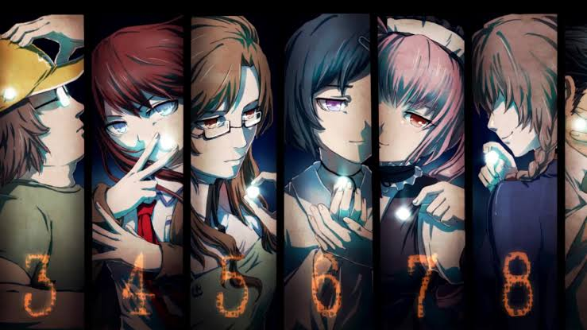

FUTURE GADGET LABORATORY
Funded by the mad scientist, Hououin Kyouma.

Hack into the gate
As the story unfolds, you'll discover the true nature of time travel and its consequences.
Diminua a janela do navegador para ver o efeito de responsividade.
Funded by the mad scientist, Hououin Kyouma.

As the story unfolds, you'll discover the true nature of time travel and its consequences.
Steins Gate Timeline
Steins;Gate is a science fiction visual novel that follows the story of Rintaro Okabe, a young man who accidentally discovers the ability to send messages back in time using a device he built. from this discovery, he becomes entangled in a complex web of events that threaten the fabric of reality itself. The game explores themes of time travel, causality, and the consequences of altering the past.